For  integrable on
integrable on  , the Fourier transform is
, the Fourier transform is
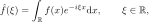
 is
is
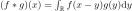
.
For integrable : is bounded by
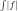
and uniformly continuous;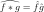
; if is  with
with 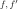
integrable then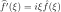
; and if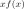
is integrable then is differentiable with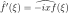
.
The bound is the triangle inequality, the modulus of the exponential
being  . Uniform continuity:
. Uniform continuity:
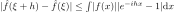
, independent of , and the integrand is dominated by
, and the integrand is dominated by
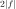
and tends to pointwise, so dominated convergence
applies.
pointwise, so dominated convergence
applies.
For the convolution,
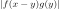
is integrable on the plane by Tonelli, so Fubini permits exchanging the order in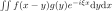
; substituting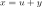
factorises the exponential and gives the product.Integrating by parts on
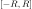
and letting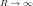
– the boundary terms tend to because is integrable with integrable
derivative, hence has limit at  – gives the rule for
– gives the rule for
 . Differentiation under the integral sign, justified by the
dominating function
. Differentiation under the integral sign, justified by the
dominating function 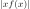
, gives the last rule.For
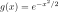
one has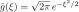
.
Both rules of the previous proposition apply to  , which decays
faster than any polynomial. Differentiating under the integral and then
integrating by parts,
, which decays
faster than any polynomial. Differentiating under the integral and then
integrating by parts,
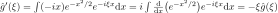
. So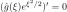
, whence , and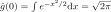
is the Gaussian integral, computed by squaring it and passing to polar coordinates.
Let be integrable and continuous with integrable.
Then
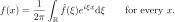
For  consider
consider
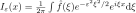
. Substituting the definition of and applying Fubini – legitimate because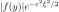
is integrable on the plane – gives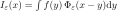
, where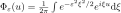
. By the Gaussian computation and a change of scale,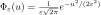
, which is non-negative with total integral and concentrates at
.
Hence
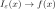
as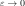
, by the same splitting argument as for Fejer's kernel, using continuity of at  and
integrability to control the tail. On the other hand
and
integrability to control the tail. On the other hand 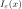
tends to the right-hand side of the statement by dominated convergence, the integrand being dominated by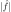
. The two limits agree.
For integrable and square-integrable with integrable,
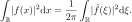
 onto itself preserving the norm up to the factor
onto itself preserving the norm up to the factor
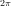
.Put
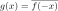
, so that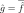
and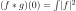
. The convolution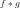
is continuous and its transform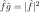
is integrable, so the inversion formula applies at:
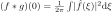
, which is the identity.
The set of such is dense in  , and an isometry defined on
a dense subspace of a complete space extends uniquely to the whole; the
extension is onto because the inverse transform extends likewise and the
two compositions are the identity on the dense subspace.
, and an isometry defined on
a dense subspace of a complete space extends uniquely to the whole; the
extension is onto because the inverse transform extends likewise and the
two compositions are the identity on the dense subspace.
The three rules – derivative to multiplication, convolution to product,
norm preserved – are exactly what makes the transform the standard tool
for linear constant-coefficient equations: applying it turns the heat
and wave equations into ordinary differential equations in ,
solvable by inspection, and Plancherel guarantees that the answer
obtained by inverting has the same energy as the data.